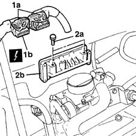
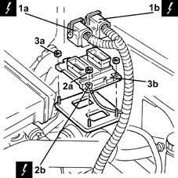

1056B82 injection/ignition system e.c.u. (one) - r + r
- Path
- Procedures > 10 ENGINE > 1056 PETROL INJECTION SYSTEM > 1056B multi-point injection system (mpi) > 1056B82 injection/ignition system e.c.u. (one) - r + r
- Kind
- repair procedure (removal / refitting; the operation number is the code)
- Applies to
- engines: 1.2 8v, 1.2 16v, 1.4 16v; all production periods
- Interactive page
- https://sloeber94.github.io/elrnDB-lYpsln/en/#/2428928
Applies to: engines: 1.2 8v; all production periods
 Removing
Removing
 Refitting
RefittingEnsure that the ignition key is in OFF position, then disconnect the battery negative terminal (-).
 | Name | Connector |
|---|---|---|
- | Battery |
Proceed with removal 1048A10 air cleaner filtering element - replace .
1. Undo retainers (1a) and disconnect the electrical connections (1a) and (1b) from the injection/ignition system control unit.
| Name | Connector |
|---|---|---|
1b | Engine management control unit |
2. Undo the nuts (2a) and remove the injection/ignition control unit (2b).

Applies to: engines: 1.2 16v; all production periods
Removing
RefittingEnsure that the ignition key is in OFF position, then disconnect the battery negative terminal (-).
| Name | Connector |
|---|---|---|
- | Battery |
1. Disconnect the electrical connections (1a) and (1b) from the injection/ignition system control unit.
| Name | Connector |
|---|---|---|
1a | Engine management control unit |
| Name | Connector |
|---|---|---|
1b | Engine management control unit |
2. Undo nut (2a) and disconnect earth lead (2b) from the injection-ignition system control unit.
| Name | Connector |
|---|---|---|
2b | Injection ECU earth |
3. Undo the remaining nuts (3a) and remove injection/ignition control unit (3b) from the bracket.

Applies to: engines: 1.4 16v; all production periods
Removing
RefittingEnsure that the ignition key is in OFF position, then disconnect the battery negative terminal (-).
| Name | Connector |
|---|---|---|
- | Battery |
1. Disconnect the electrical connections (1a) and (1b) from the injection/ignition system control unit.
| Name | Connector |
|---|---|---|
1a | Engine management control unit |
| Name | Connector |
|---|---|---|
1b | Engine management control unit |
2. Undo nut (2a) and disconnect earth lead (2b) from the injection-ignition system control unit.
| Name | Connector |
|---|---|---|
2b | Injection ECU earth |
3. Undo the remaining nuts (3a) and remove injection/ignition control unit (3b) from the bracket.
Applies to: engines: 1.2 8v; all production periods
Refitting
RemovingRefit the fuel injection/ignition control unit in its seating and secure it with its bolts.
Connect the electrical connections to the fuel injection/ignition control unit and secure with the bolts.
Proceed with refitting 1048A10 air cleaner filtering element - replace .
Connect the negative (-) battery terminal.
Applies to: engines: 1.2 16v; all production periods
Refitting
RemovingPlace the injection/ignition control unit back in its housing and fix it using the nuts.
Connect the earth lead to the injection-ignition system control unit and fix it using the nut.
Connect the electrical connections to the fuel injection/ignition control unit.
Connect the negative (-) battery terminal.
Applies to: engines: 1.4 16v; all production periods
Refitting
RemovingPlace the injection/ignition control unit back in its housing and fix it using the nuts.
Connect the earth lead to the injection-ignition system control unit and fix it using the nut.
Connect the electrical connections to the fuel injection/ignition control unit.
Connect the negative (-) battery terminal.
Topics linked from this page (6)
- 1048A10 air cleaner filtering element - replace
- A1B Battery ( BATTERY NEGATIVE )
- C60 Injection ECU earth
- M10 Engine management control unit
- M10A Engine management control unit ( ENGINE )
- M10B Engine management control unit ( ENGINE )
Topics that link to this page (14)
- B13 ENGINE STARTS WITH DIFFICULTY'
- B20 ENGINE STARTS, AND CUTS OUT STRAIGHT AWAY
- D01 ENGINE NOT RUNNING SMOOTHLY / (HESISTANT)
- D02 ENGINE NOT RUNNING SMOOTHLY / (LOSING POWER)
- D03 ENGINE NOT RUNNING SMOOTHLY / (IRREGULAR OPERATION)
- D05 ENGINE DOES NOT PRODUCE BEST PERFORMANCE
- D10 ENGINE IDLE IRREGULAR
- K100 MIL WARNING LIGHT DOES NOT WORK
- K27 ENGINE COOLANT OVERHEATING SIGNALLED BY THE INSTRUMENT
- K29 ENGINE COOLANT OVERHEATING SIGNALLED BY INSTRUMENT - WITH VAPOURS VISIBLE
- K30 MINIMUM ENGINE OIL PRESSURE WARNING LIGHT NOT WORKING
- Z54 MISFIRE ERROR IN ONE CYLINDER
- 0510A10 cylinder compression - check for loose spark plugs or injectors
- 1056B87 ignition/injection system control unit mount - r r